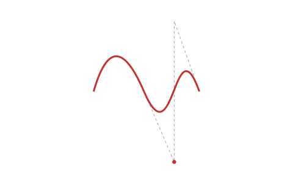
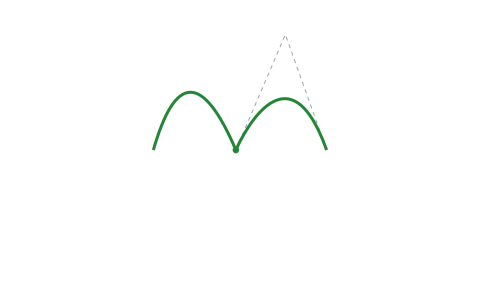
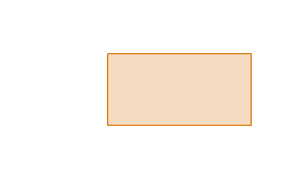
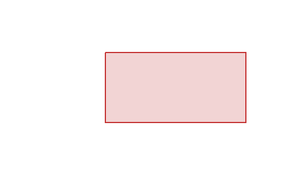
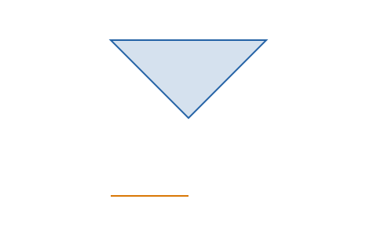
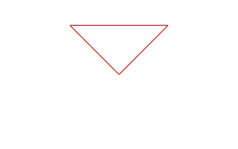
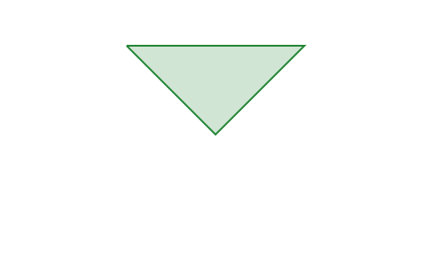
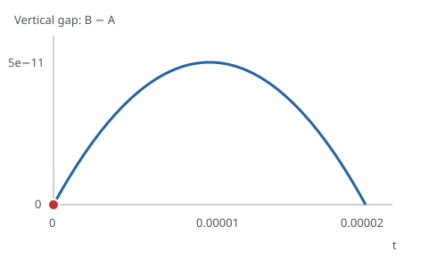
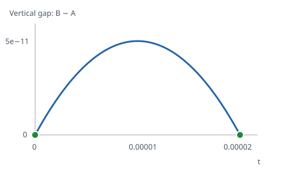

Geometry correctness without work caps
Removing the subdivision and refinement caps exposed geometry that the old implementation could silently discard. The repairs addressed termination, intersection and face-construction defects. Validation covered the complete generated and pinned artwork corpora at the tested revision without deadlines. All applicable checks passed; the runs retained the existing open-path exclusions.
How to read the geometry examples. The library splits input outlines at crossings, joins the resulting edges into a graph, and traces the enclosed regions, called faces. Winding counts determine which inputs cover each face. A boolean operation selects faces: intersection keeps the overlap, exclusion keeps regions covered by only one input, and fracture returns the individual regions.
- Jest
- 21 suites · 10,138 tests passed
- Generated corpus
- 424 cases · no failures
- Pinned artwork corpus
- 1,857 pairs · no failures or missing checks
Approach
The work preserved failing inputs, established memory containment, then repaired termination, primitive geometry, intersections and face construction in that order. Validation ran without deadlines before normal test-mode timing failures were assessed. The runtime dependency set was unchanged.
The removed subdivision, intersection-pair, split-count and tangent-sampling caps could silently discard geometry. Their replacements stop on geometric criteria or representable parameter progress. Exhausting memory remains a failure; it is not a reason to return a partial arrangement.
Visible regressions
The comparison images use the source at 780ecef before the repairs and the validated
production bundle at 6e24ce4 after them. They are static SVGs generated from those revisions;
opening this report does not run the boolean library. Input A is blue and input B is orange.
1 · A smooth cubic inherited the wrong control point
SVG’s S command reflects a previous cubic control point only when the previous command
was cubic too. After a quadratic command, its first control point must be the current point.
The parser instead reflected the quadratic control point, bending the next curve in the wrong direction.
The repaired family check also applies to smooth quadratic commands.


M10 70 Q30 0 60 70 S90 0 115 70. The first panel uses this SVG string directly. The other panels show the library’s expanded segments; dashed guides and a dot identify the cubic controls. This constructed example exercises the mixed-family regression in smooth-commands.test.ts.2 · A crossing near the end of a long edge disappeared
A is a rectangle two units wide and a billion units tall. B is a small rectangle spanning
x = 1…3 and y = 1…2. Their intersection is the unit square at x = 1…2.
A fixed cutoff in the edge parameter discarded the necessary cuts near the y = 0 end of A’s long side.
The repaired cutoffs account for segment speed, so distance along the actual geometry determines how close a cut is to an endpoint.


Intersection, from mixed-scale.test.ts. All panels use the same crop; A continues far beyond the image. The calculation uses its full height. A related retained fuzz input exposed the same parameter-cutoff defect.3 · Issue #3: a triangle came back as disconnected edges
The first two segments of A retrace a line and cancel, leaving a triangle. B retraces a separate line and contributes no filled region. Exclusion should therefore return the triangle. Collapsing a chain of graph edges had lost their traversal direction, so the returned segments no longer joined in order. The repaired chain preserves both direction and each input’s winding count.



Exclusion with the even-odd fill rule. The calculation uses the original raw segment arrays from reported-issues/issue-3.ts. Serialization preserves discontinuities: the baseline produces separate move commands, so its visible edges do not form a filled path. Tests also cover the non-zero rule and reversed input order.4 · A chord approximation hid a second crossing
Two quadratics have x = t and a vertical difference of t × (0.00001 − t/2).
They meet at t = 0 and t = 0.00002. The old flatness check replaced their shallow excursion with chords and found only the shared endpoint.
The repaired finder checks derivative ranges to establish when a pair can cross at most once, and subdivides further when it cannot establish that.


5 × 10⁻¹¹. This analytic case is in graph-regressions.test.ts; artwork commons-8667810/00 exposed the corresponding missing-crossing failure.Geometry repair details
- Smooth SVG commands use a reflected control point only after a command from the matching curve family.
- Cubic self-intersections are solved once per original segment. Rechecking their children had repeatedly rediscovered a rounded endpoint and grown the edge array without bound. Subdivision uses a depth-first work list.
- Positive arc radii retain SVG radius correction, however small their specified value. Sampling and splitting no longer flatten genuine tiny curves. Arc bounding-box padding follows arithmetic scale instead of a fixed distance.
- Distant geometry is translated toward the origin during construction. Canonical shared endpoints close the output exactly. Broad-phase bounds cover the endpoint neighborhood accepted by the intersection solver.
- Collinearity checks include displacement, not just parallel direction. Line/Bézier roots are isolated between derivative extrema. Circular arc intersections preserve the second crossing beside a shared endpoint. Polynomial contact refinement solves both curve parameters and distinguishes nearby roots using their numerical conditioning. Parameter tolerances also follow a bound on segment speed: a fixed parameter cutoff had discarded a crossing a full unit from the endpoint of a long line in a retained fuzz seed.
- Polynomial leaf pairs use derivative ranges to certify when they can cross at most once. Ambiguous pairs subdivide further to the point resolution. Artwork
commons-8667810/00had a second crossing hidden beside a shared endpoint by the old chord approximation; the missing cut corrupted its faces. - Minor-graph chains preserve traversal direction and per-input winding. A degree-two vertex is collapsed only when those windings agree across it. This also repairs the regressions retained from issue #3.
- Face orientation uses analytic area about a local origin, with compensated sums and a stable short-arc formula. Component containment checks bounds.
- Angular ordering places its branch cut away from outgoing tangents and uses analytic curvature and curvature derivatives to distinguish cubic contacts. Shared leading control points also provide an exact departure comparison. Development builds check Euler's planar-graph identity: one positive-area face alone did not prove that the traced arrangement was planar.
- Resolved short edges constrain endpoint merging: each endpoint's merge radius is below half its incident edge lengths. The radii are shared by coordinate, including separately allocated copies of an input endpoint. Splitting retains cuts down to arithmetic precision, so one curve cannot discard a crossing retained by the other. Polynomial coincidence checks use their evaluation error scale; subdivision resolution remains separate. Approximate arc contacts retain their own cut and merge tolerance. This repairs the dense near-endpoint intersections in
commons-48353204/05. - Exact shared polynomial endpoints are included as roots. The line/Bézier distance calculation also preserves exact endpoint incidence instead of introducing a residual through normalization.
- Nesting uses a boundary vertex of each component. Distinct connected components do not intersect, so this identifies the containing face without searching for an interior sample in a tiny, sampled polygon. Arc subdivision preserves the supplied endpoints and shares the midpoint exactly; rebuilding those points through trigonometry had moved them across containment rays.
- Output restoration preserves signed winding when adding the coordinate offset rounds a thin region enough to reverse its area. The retained polygon reduction from
commons-8667810/00changes from a negative face in local coordinates to a positive triangle after restoration. Reversing traversal retains the rounded boundary and relative winding of contours and holes; no face is discarded and no filled-region tolerance changes.
Independent checks and references
The test area calculation remains separate from production area code. For short arcs it uses quadrature instead of the production Taylor recurrence. Raster checks retry thin, otherwise unjudgeable regions at higher resolution without changing their boundary band or alpha tolerance. Cases still unjudgeable within the renderer allocation budget remain failures.
Partition visual checks paint fills before strokes on both sides. Otherwise, reordering the same regions changed pixels by painting over a shared boundary. A separate regression verifies order independence and detection of a missing internal boundary. No tolerance was loosened.
The simple-08 division and fracture references omitted a real closing region. An independent decimal intersection solve confirms it; the fixture README records the parameters. The corrected references retain that region. The real-02 geometry references were not changed.
The new short-edge regression retains the existing area precision. The cubic regression from issue #3 checks the same command structure and bounds coordinate differences by floating-point arithmetic scale. The previous serialized-string comparison rejected a control-point change of about five trillionths caused by splitting and rejoining; it did not describe a changed filled region.
The circle/cubic contact-count test previously required fewer than twenty segment-pair reports. Four shared vertices each belong to two arcs and two cubics, contributing sixteen reports; four quadrant-midpoint contacts bring the exact total to twenty. The corrected test requires that total as well as the original eight distinct contact positions. Preserving arc endpoints exposed the incorrect bound by restoring the missing endpoint incidences.
Untimed runs snapshot their workers and shared geometry helper, record each job before starting it, and reject stale resume results. A systemd service contains JavaScript and native renderer allocations together without containing the IDE. A deliberate allocation exhaustion test killed only that service.
Large partition rendering then exposed a real resource failure under that limit. Releasing inactive builds and completed oracle caches reduced retained geometry. Native renderer wrappers additionally needed collection and an event loop turn between batches so N-API finalizers could release their canvases. Both large cap-affected artworks completed every check after that repair under the same memory limit, including in the final corpus sweep.
Partition rendering also reuses the SVG frame after removing the original paths. Reparsing a large source drawing for every face had repeated the same work thousands of times. A CPU profile then showed most sampled time in garbage collection. The revised partition checks serialize the output and release the graph and segment arrays before rendering; a later operation rebuilds the arrangement if needed. Each face is still rendered and checked at the same size. Dense-artwork partition checks still took roughly ten to thirteen minutes each in the final sweep. No performance bound follows from these repairs.
Validation record
All results below were obtained with the code and bundles at 6e24ce4, including the output-restoration repair. Corpus validation ran without deadlines in services capped at 2 GiB with swap disabled. Those runs completed without resource exhaustion. Coverage verification also checked that the recorded workers and shared geometry helper matched that build.
- Complete Jest run: 21 suites, 10,138 tests passed.
- Final-build untimed generated corpus: 424 cases, no failures; 12,384 checks passed and 256 existing open-path checks were excluded by fixture metadata. All generated expected-failure entries were removed only after corresponding passing results.
- Complete pinned artwork corpus: 1,857 pairs, 51,996 checks; 45,788 passed, 6,208 existing open-path checks excluded by fixture metadata, no failures or missing jobs. These exclusions preserve inputs whose filled-region contract is not established; they are not new exceptions for repaired cases.
- Corpus tooling: 18 tests passed, including snapshot loading, unfinished-job replay, stale resume rejection and synchronous timeout recovery.
- TypeScript and formatting checks passed. Excluding generated build declarations repaired type checking after a fuzz build.
- Previously failing representative artworks, including the cow and bee, passed the independent structural, area and raster checks.
- The mammal-tree structural and orientation checks and the previously unjudgeable thin intersection passed. All artwork expected-failure entries were removed after corresponding passing results.
- The large cap-affected artworks
commons-141391608/00andcommons-19544924/01passed every untimed check. - All 80 existing fuzz seeds passed after repairing the mixed-scale crossing.
- Full and core ESM/UMD bundles and the docs bundle were rebuilt and passed public-API checks for mixed-scale intersections and partitioning; the full bundles also passed a smooth-command parsing check.
Normal test modes at the tested revision retained their timing budgets. A passing correctness check does not establish a performance bound. See untimed correctness checks for commands, containment requirements and result interpretation.